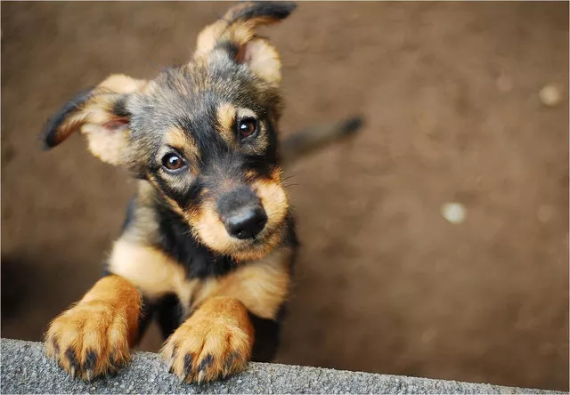

- Um cachorro adulto tem 42 dentes
- Os cães são onívoros, eles precisam comer mais do que apenas carne
- O olfato dos cachorros é 1 milhão de vezes melhor do que o dos seres humanos. O olfato dos cães é um dos melhores da natureza. Se as membranas situadas no nariz dos cães fossem estendidas, elas seriam maiores que o próprio cão.
- A audição dos cachorros é 10 vezes melhor do que a dos humanos
- Castrar seu cachorro pode ajudar a prevenir vários tipos de câncer.
- Se não for castrada, uma cachorra pode ter 66 filhotes em 6 anos
- Em média um cão pode correr até 30km/h. A raça mais rápida do mundo é o Whippet.
- Na Bíblia, os cachorros são mencionados 14 vezes.
- As cachorras carregam seus bebês na barriga por 60 dias antes deles nasceram
- Comparado com os humanos, os cachorros tem o dobro de músculos na orelha
- Os cachorros serão submissos a qualquer um que se mostrar superior.
- O nariz de cada cachorro é único, assim como nossa impressão digital
- A temperatura canina gira em torno de 38ºC.
- As glândulas sudoríparas dos cachorros estão entre os seus dedos das patas.
- 70% das pessoas assinam o nome de seus animais de estimação nos cartões de natal, junto com o nome da família
- As pessoas tem cachorros como bichos de estimação há 12 mil anos
- É um mito dizer que os cachorros não enxergam cores, eles podem ver cores, mas em tonalidades diferentes do que vemos.
- Obesidade é o problema de saúde mais comum nos cachorros. Normalmente decorrente de má alimentação.
- A maior ninhada ocorreu em 1944 quando uma American Foxhound teve 24 filhotes.
- Dar chocolates aos cães pode ser fatal para eles. Um ingrediente do chocolate, a teobromina, estimula o sistema nervoso central e o músculo cardíaco. Cerca de 1 kg de chocolate ao leite, ou 146 gramas de chocolate puro podem matar um cão de 22 kg.
- Dois cães sobreviveram ao naufrágio do Titanic. Escaparam nos primeiros botes salva-vidas, que levavam tão poucas pessoas que ninguém se importou que eles estivessem ali.
- Já não existem mais Huskies Siberianos na Sibéria.
- Cães de guarda são mais suscetíveis a atacar um estranho correndo, que um que esteja parado. Ao se deparar com um cão bravo, não corra.
- Os cães selvagens que vivem em matilhas na Austrália são chamados Dingos.
- Os cães têm cerca de 100 expressões faciais, a maior parte delas é feita com as orelhas.
Fonte da notícia